01 / Research analytics
MedSeg-MRI
A research model-performance dashboard covering locked validation, class and region metrics, case exploration, model selection, QA, and spatial integrity.
DiceHD95QA traceability
View case study ↗Future project / In progress
A proposed platform for medical-device commercial analysis, regulatory evidence tracking, biomedical consulting, and post-market risk monitoring. The modules below define the planned scope.
Biomedical engineering portfolio
Biomedical engineer developing evidence-led analytics, medical AI evaluation, regulatory intelligence, and decision-support tools.
Selected projects
Completed projects are presented with their methods, outputs, evidence boundaries, and next steps.
A research model-performance dashboard covering locked validation, class and region metrics, case exploration, model selection, QA, and spatial integrity.
A medical-device regulatory, quality, biomedical, and predictive-risk intelligence platform built from an ETL notebook to interactive BI dashboards.
A planned biomedical platform combining medical-device sales intelligence, AI-supported regulatory readiness, consulting workflows, and post-market risk monitoring.
Future project roadmap
These are planned concepts, not completed products. Each one will be developed with evidence, privacy, explainability, and regulatory boundaries in mind.
Help medical-device teams understand product demand, territory performance, customer segments, distributor activity, and sales opportunities. The planned workflow would combine clean commercial data with device categories, account history, pipeline stages, and service signals.
Planned output:interactive commercial dashboard with account, territory, product, and opportunity views.Support teams preparing technical and quality documentation by organizing requirements, mapping evidence, identifying missing artifacts, and showing traceable review status. The assistant would summarize documents for human review rather than make regulatory decisions or replace a qualified regulatory professional.
Planned output:requirement-to-evidence matrix, review queue, and explainable gap report.Create a structured workspace for biomedical engineers and consultants to assess device needs, compare technical specifications, document risks, prepare recommendations, and communicate implementation plans to non-technical stakeholders.
Planned output:consultation templates, decision framework, device comparison model, and client-ready report.Extend the RegIntel 360 direction into a focused post-market surveillance tool for complaints, maintenance events, CAPA activity, audit findings, and emerging device risk. The goal is early visibility and prioritization, not automated safety conclusions.
Planned output:risk-driver dashboard, alert triage, trend analysis, and documented human approval steps.The dashboard turns a locked-validation result into a traceable research artifact. It separates overview performance from target-level detail, case-level exploration, epoch selection, and QA evidence.
End-to-end pipeline
Technical story
The details below are taken from the verified project release documents and dashboard evidence.
Each case uses four co-registered NIfTI channels ordered FLAIR, T1w, T1gd, and T2w. The verified workflow converts to channel-first, reorients images and labels to RAS, resamples to 1.25 mm isotropic spacing, uses bilinear interpolation for images and nearest-neighbor interpolation for labels, then applies nonzero per-channel MRI normalization.
The model is a MONAI 3D U-Net with 4 input channels, 4 output classes, channels 16–256, four downsampling strides, two residual units, and 4,811,129 parameters. Training used DiceCELoss, AdamW, learning rate 0.0001, weight decay 1e-05, batch size 1 case, four sampled patches per case, and a 128 × 128 × 96 ROI.
AMP runs became numerically unstable after epoch 16. Nonfinite gradients and logits were detected, unsafe checkpoints were rejected, and training was recovered with preserved finite checkpoints and unscaled FP32. Epoch 19 completed without reported numerical errors and was selected; epoch 20 was rejected after validation Dice collapsed to 0.2265.
Validation uses full-volume sliding-window inference with a 128 × 128 × 96 ROI, overlap 0.25, constant blending, and constant padding. The evaluation covers all 97 locked-validation cases and reports class and BraTS-style region metrics, deterministic 95% bootstrap intervals, HD95 in millimetres, and 1-mm surface Dice.
Architecture and delivery
The compact release preserves the evidence trail without pretending to be a production clinical deployment.
The release documents a reproducible CLI contract: supply a compatible 4D NIfTI and the verified epoch-19 checkpoint, then write a 3D prediction NIfTI. The compact folder does not include the original source backend, so the portfolio describes the interface and evidence rather than inventing an API deployment.
Power BI imports four evidence tables: case metrics, aggregate metrics, model selection, and QA summary. Dimensions for case, target, metric, and epoch provide controlled filtering; DAX measures expose valid observations, confidence intervals, model selection, and QA counts.
The release manifest records file hashes, selected checkpoint SHA-256, source evidence paths, case counts, null policy, and verification status. This makes the final result auditable and easy to hand off.
Inside the build
Screens from the working Power BI dashboard and verified research release.
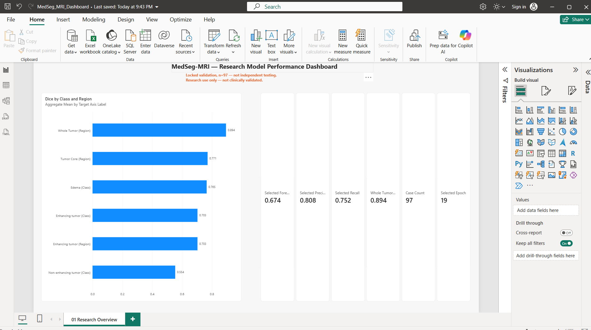
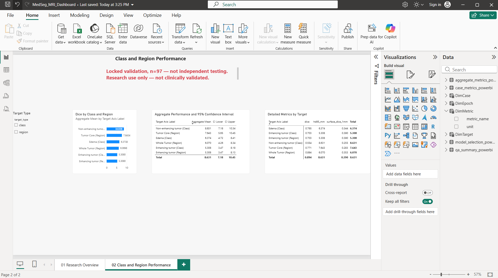
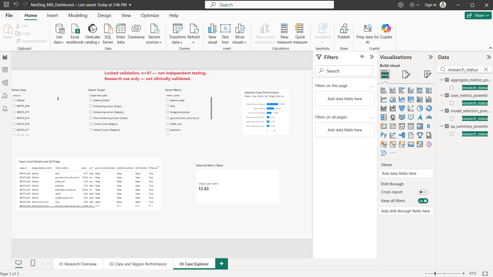
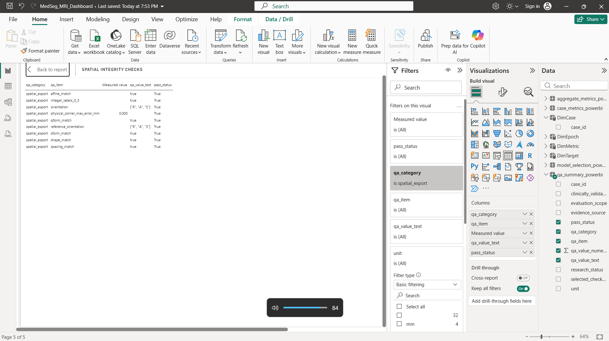
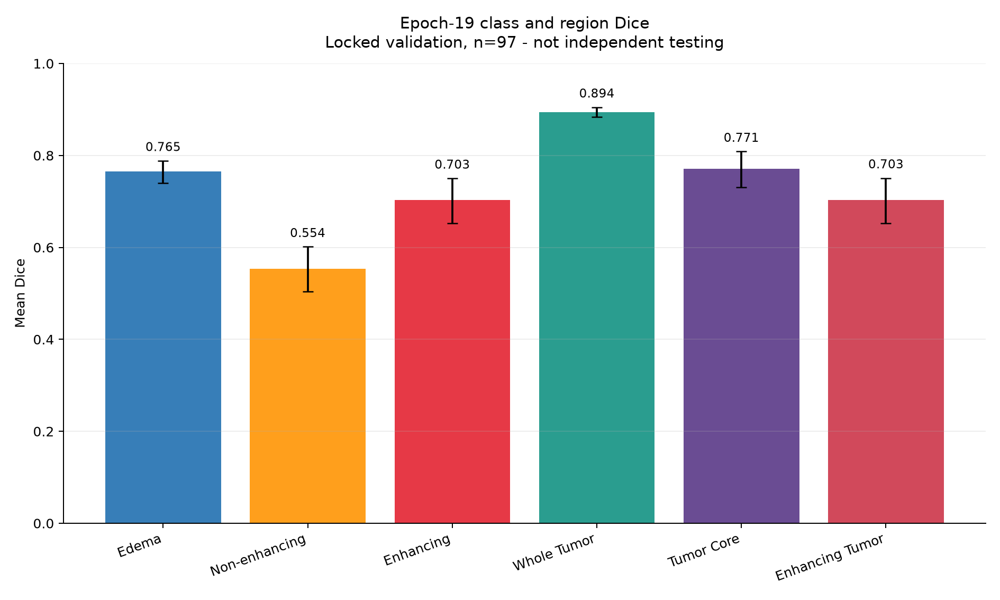
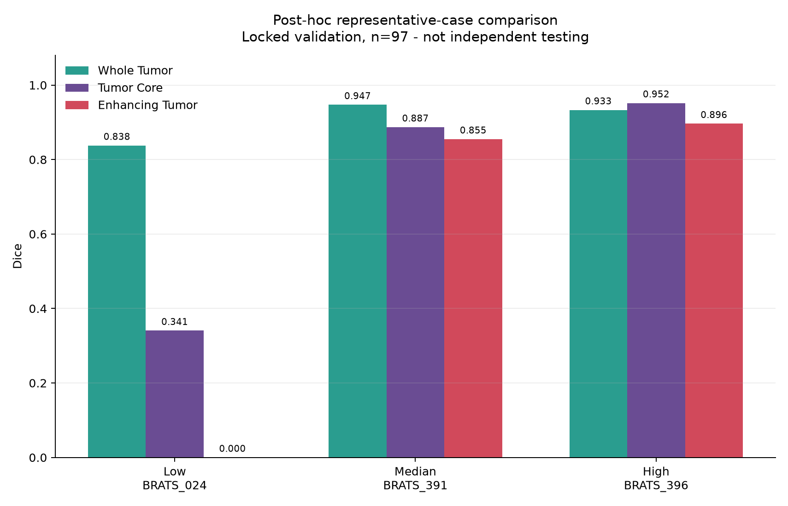
Authentic model evidence
Generated from the full local MedSeg project for review. These visuals are not synthetic portfolio mockups.
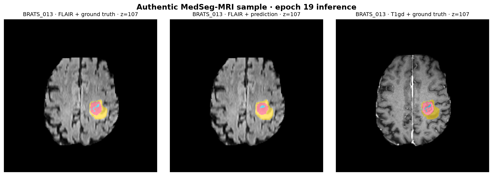
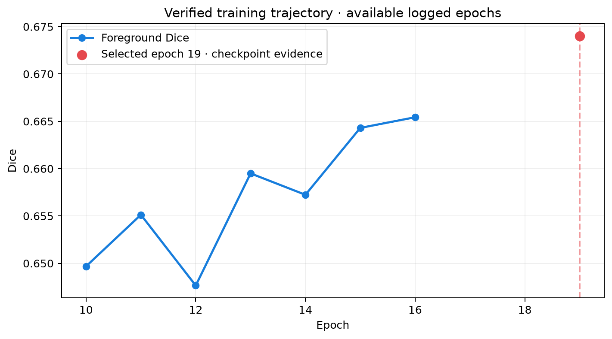
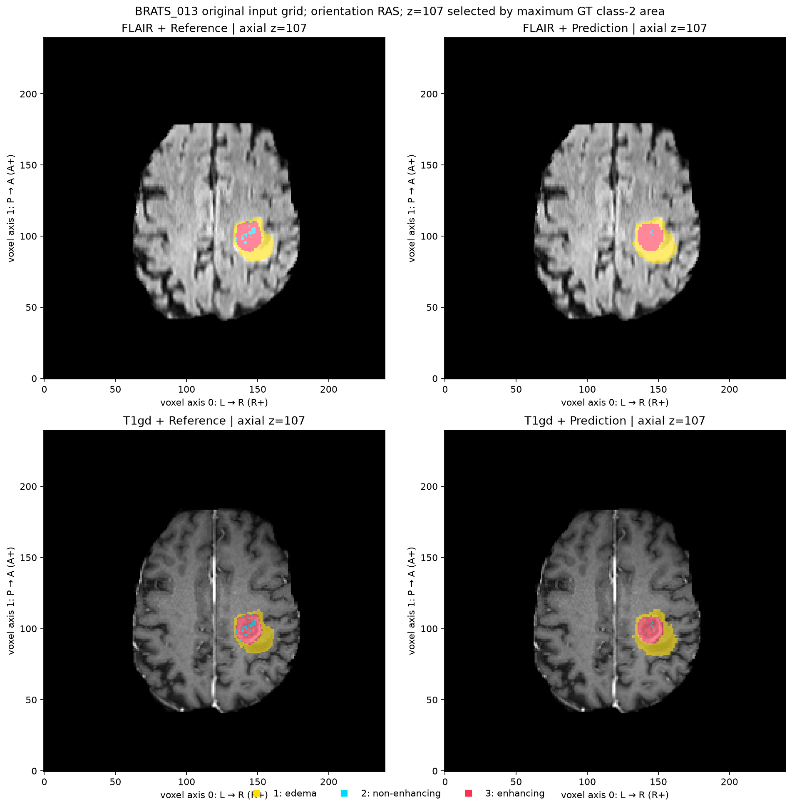
Scope and limitations
Epoch 19 is the selected research checkpoint. Whole Tumor Dice is 0.8944, foreground Dice is 0.6740, 36 QA checks passed, and spatial-export checks passed on the documented representative cases.
The 97-case set is locked validation, not independent testing. The provided test images are unlabeled, there is no external clinical validation, and the model must not be used for diagnosis or treatment decisions.
Correct the stale root training summary, package the original training and inference source into a reproducible repository, add automated tests and CI, expose a reviewed service boundary if needed, and validate prospectively across sites, scanners, populations, and acquisition protocols.
RegIntel 360 consolidates regulatory records, CAPA activity, complaints, biomedical maintenance, and audit findings into a repeatable data-processing workflow and interactive Power BI reporting layer. My role covered development of the data-processing pipeline, data model, risk engine, and BI dashboards.
Project pipeline
How it was built
The project evidence includes the ETL notebook, Power BI dataset, architecture documentation, schema notes, and dashboard screenshots.
The notebook creates raw CSV sources, standardizes column names, cleans text fields, removes duplicate rows, exports processed datasets, and writes ETL and data-quality reports. The quality gate targets 99% completeness and zero duplicate rows.
The model separates shared dimensions from domain facts: Dim_Device and Dim_Date connect to regulatory, CAPA, complaints, maintenance, and audits. A consolidated Fact_Device_Risk table supports device-level monitoring and executive prioritization.
Regulatory, CAPA, complaint, maintenance, and audit signals are normalized and combined into component scores. The overall score uses weights of 25%, 25%, 20%, 15%, and 15%, then classifies devices as Critical, High, Medium, or Low.
A Random Forest experiment uses a binary high-risk target derived from risk_score ≥ 50 and 12 risk-related features. The documented test set contains only nine observations, so this is presented as an exploratory extension rather than validated future-event prediction.
Architecture
A logical analytics architecture, not a claim of production deployment.
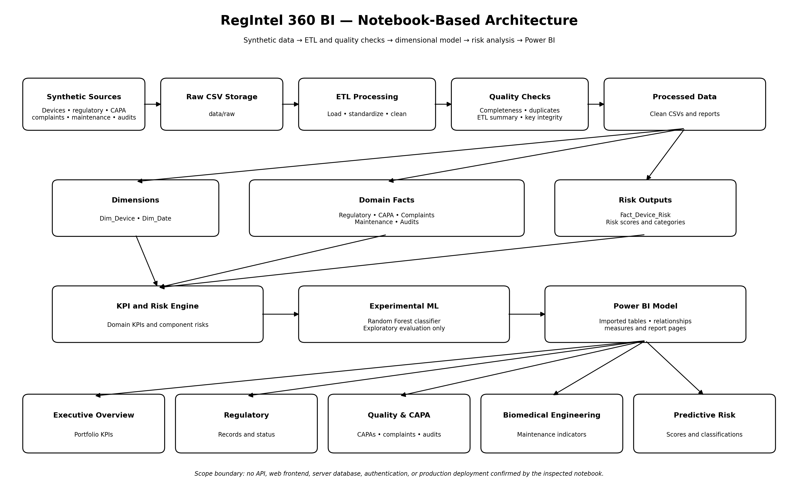
Evidence boundary: the inspected documentation confirms the notebook workflow and Power BI reporting layer. It does not confirm a REST API, web frontend, hosted database, authentication service, or production deployment.
Dashboard evidence
Screenshots from the RegIntel 360 Power BI report supplied for this portfolio.
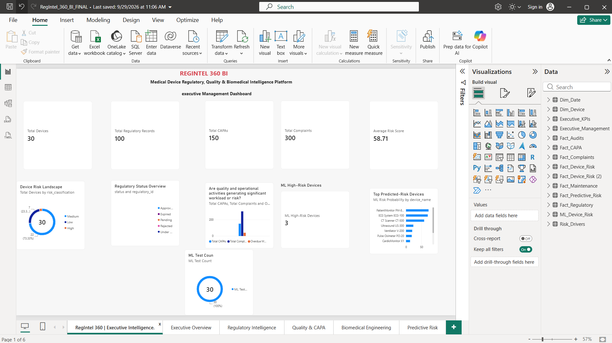
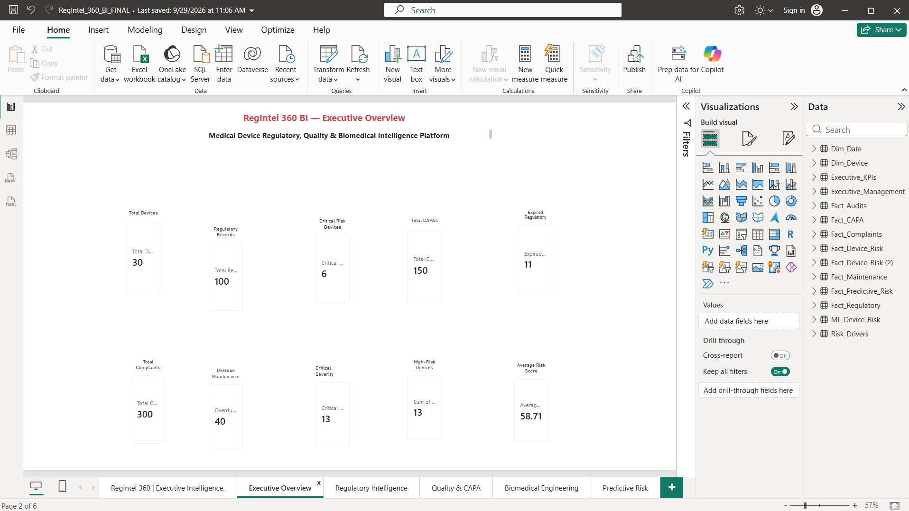
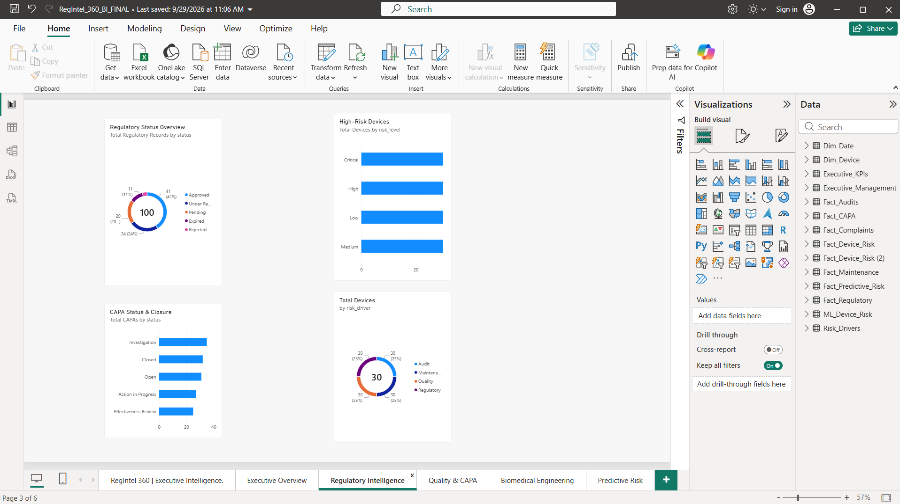
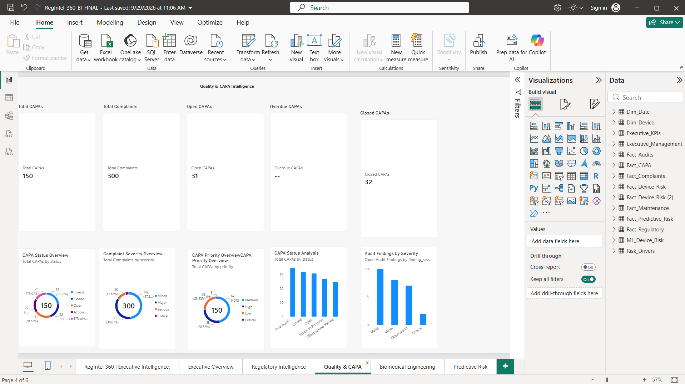
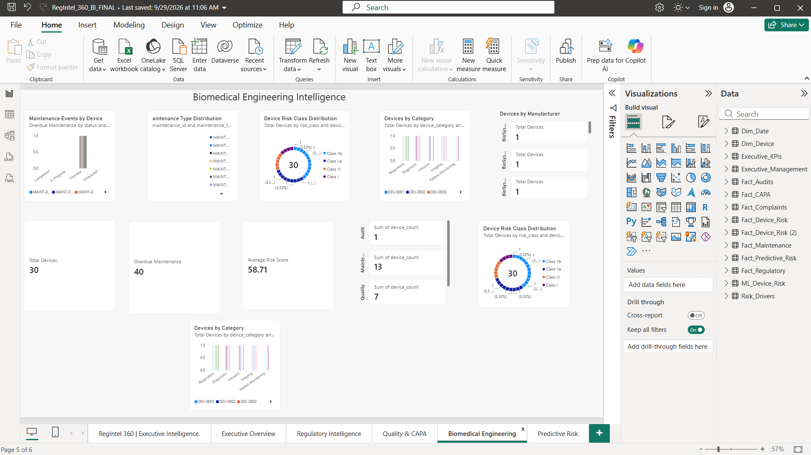
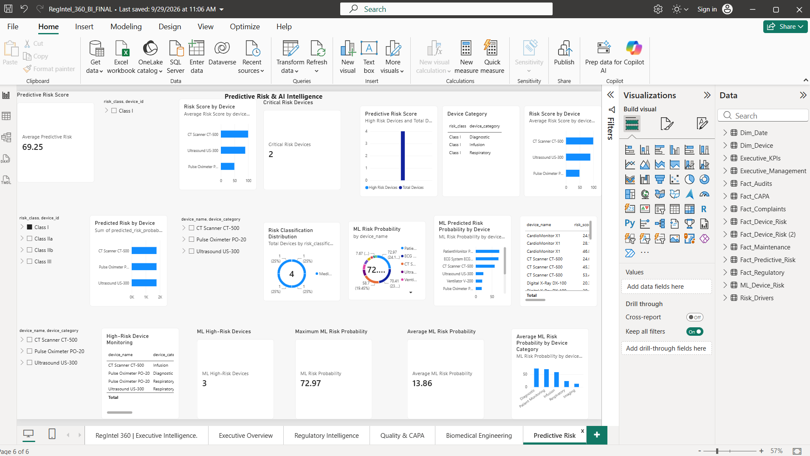
Seven-month work arc
A portfolio narrative based on the documented work stages. It is not a fabricated calendar log.
Code and evidence
The full working project is now available for evidence review alongside the verified release package.
.venv\\Scripts\\python.exe -B src\\inference.py
--image case.nii.gz
--checkpoint selected_epoch19.pth
--output prediction.nii.gzOutput requirements are explicit: 3D, finite, integer labels 0–3, and the same spatial grid as the input.
if len(rows) != 97
or checkpoint_hash != expected_hash:
raise RuntimeError("Canonical evidence failed")The release generator checks canonical evidence before producing figures, results, and the hash-verified manifest.
The portfolio uses authentic project outputs, but the result remains research-only: locked validation is not independent testing, and the stale root training summary must be corrected before public release.
Research evidence · not clinical validationAbout
I’m Gourrab Mohammed, a biomedical engineer developing analytics, medical AI evaluation, regulatory intelligence, and decision-support workflows. My work connects data processing, technical validation, and clear communication for research and operational use.
Let’s connect
Biomedical Engineer · Gourrab Mohammed